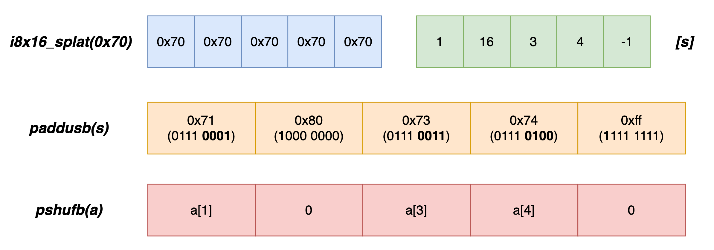

WebAssembly - Relaxed SIMD
本篇来看的提案是 - “Relaxed SIMD”，GitHub 链接在这里。今天要介绍的这个提案在原始 SIMD 提案的基础上又增加了若干指令，不同的是，这些指令根据执行引擎运行所在平台的不同，可能具有不确定（non-deterministic）的执行结果。
最初的 “128-bit packed SIMD” 提案考虑到兼容性，仅选择了各类 ISA 中最常用的那部分 SIMD 指令，这些指令在标准中具有明确的执行规则，由此屏蔽了平台差异带来的不确定执行结果，但这种方案导致 Wasm SIMD 在某些特殊场景下无法完全利用硬件来进行更高性能的计算。作者在提案中列举了下面几个例子。
Hardware-dependent Instructions（硬件依赖指令）
这类指令通常能够提升某种特定计算的效率，但其实现依赖于硬件支持，比如 “FMA（Fused Multiply Add）”。FMA 是形如 “(a * b + c)” 这种计算模式的一种更高效实现方式，常用于浮点数计算。它被广泛应用于 Gaming/AI 等领域，可以大幅提升多媒体处理以及模型训练的效率。该方式可以通过单一步骤完成计算过程中的 “*” 和 “+” 两个操作，且整个过程中只需要一次 rounding（舍入），这使得其计算效率和结果精度都有很大提升。但由于 FMA 的高效和精确计算需要由底层硬件提供支持，因此在 “Relaxed SIMD” 提案中，对应指令（如 f32x4.relaxed_madd 等）的设计执行可能会采用两种不同方案：
- 若执行环境 ISA 支持硬件 FMA，则采用该方式；
- 否则，回退到分步计算。既先计算 “*” 然后 rounding，再基于结果计算 “+” 然后 rounding。
这两种方式由于采用了不同计算步骤，因此可能产生不同的结果值。
Approximate Instructions（近似计算指令）
这类近似计算的常见例子是 “Reciprocal”（倒数）以及 “Reciprocal Square Roots”（平方根倒数），这两类场景都可以通过诸如“牛顿迭代法”来近似计算。因此在对计算结果精度要求不高的场景下，可以获得更好的计算性能。
在各类不同的 ISA 体系中，我们可以找到这类指令的存在，比如 ARMv8 的 FRECPE，Intel 的 VRCP14PD 系列指令。但指令根据所在体系的不同，其结果精度也有所不同，因此我们说这类指令也属于 “non-deterministic” 的范畴，既同一条 Wasm 指令在不同体系的执行环境中可能得到不同的执行结果，但另一方面获得的是执行效率的提升。这类取舍便是该提案的最重要特征，“relaxed” 表示对结果的要求放宽，同时享受性能红利。
Instruction Punishment（指令惩罚）
这一问题也是由于原 SIMD 提案对指令的计算结果具有严格的确定性要求（deterministic）导致的。
比如原提案中的指令 i8x16.swizzle(a, s) 用于从给定的 v128 值中选取特定 lane 并组成一个新的 v128 值返回，关于该指令的用法可以参考下面这个例子。其中 “source vector” 对应参数 a，提供了待选择的所有 lane；“indices vector” 对应参数 s，提供了所选取 lane 对应的索引值。
;; i8x16.swizzle(a: v128, s: v128) -> v128.
(module
(memory (export "mem") 1)
(func
(i32.const 0)
(i8x16.swizzle
(v128.const i8x16 1 2 3 4 1 2 3 4 1 2 3 4 1 2 3 4) ;; Source vector.
(v128.const i8x16 0 0 1 1 2 2 3 3 -1 -1 -1 -1 -1 -1 -1 -1) ;; Indices vector.
)
(v128.store) ;; Mem: (LSB) 1 1 2 2 3 3 4 4 0 0 0 0 0 0 0 0 (MSB).
)
(start 0)
)
原提案中规定，“对于向量 s 中给出的索引，若其值产生越界，即不在 “[0, 15]” 范围内，则该索引对应的 lane 值被初始化为 0”。详细的执行细节描述规定了该指令结果的确定性，但这在某种程度上也损害了它的的执行性能。
在执行引擎中，i8x16.swizzle 可能有多种实现方式，恰巧的是，对于 ARM64 体系来说，该指令的语义正好与指令 TBL 一致。但在 x86-64 上就没有这么幸运了。为了保持索引越界时的确定性结果，该 Wasm 指令在 x86-64 上可能会采用以下方式实现（伪代码）：
__builtin_simd_wasm_i8x16_splat(0x70)
_asm_paddusb(s)
_asm_pshufb(a)
第一条指令 “__builtin_simd_wasm_i8x16_splat” 对应于 Wasm 指令 i8x16.splat，该指令会构建一个含有值 “0x70” 的 i8x16 类型向量；指令 _asm_paddusb 对应于 x86-64 的汇编指令 paddusb，该指令会使用从上一步得到的结果来对向量 s 进行对应 lane 的 “saturated add” 操作，该操作会保证经加法后所有大于 0xff 的结果值都会被设置为 0xff。最后一条指令 _asm_pshufb 对应于 x86-64 的汇编指令 pshufb，该指令会使用向量中每个 lane 从 LBS 开始的低 4 位组成索引值，决定如何从向量 a 中进行选取操作。对于该指令来说，若 MSB 的值为 0，则选择的结果值为 0。对照 SIMD 提案中 i8x16.swizzle 指令的执行语义，我们可以得到上述实现中前两条指令的由来。
正常情况下，pshufb 指令在处理位于区间 “(0x0f, 0x80)” 内的索引值时，其不能正好地贴合 swizzle 指令的语义。比如对于索引值 0x10 (b’00010000) 来说，pshufb 指令会从 a 中选择索引位置为 0 的 lane，但实际上该值已经越界。而通过前两条指令的处理，这个索引值会被变为 0x80 (b’10000000)，MSB 为 0 导致 pshufb 指令的选择结果值为 0。而这正符合 SIMD 标准的预期。
i8x16.swizzle 在 x86-64 下的可能实现流程
存在类似上述 i8x16.swizzle 指令问题的 Wasm 指令还有很多，比如 i32x4.trunc_sat_f32x4_s，它们在不同的硬件体系下为了保持执行语义的确定性，都会产生更多额外，用来处理边界情况的机器指令组合，从而耗费了更多的 CPU cycle。
小结
通过上面三种场景可以看出，“Relaxed SIMD” 提案的本质在于通过牺牲结果的确定性（在一定误差范围内），来引入更多可以更好利用底层硬件、提供更高计算性能的指令。
评论 | Comments